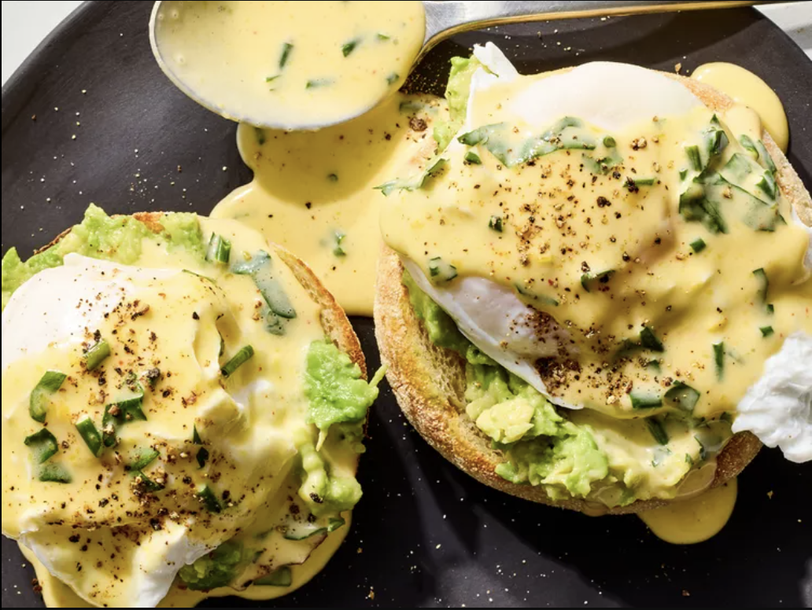

Home
Lime-Herb Hollandaise

Description
This take on Hollandaise replaces lemon juice with lime and whisks in fresh herbs. Serve over poached eggs, crab cakes, breakfast potatoes, salmon, or flank steak.
Ingredients
- 4 egg yolks
- 2 teaspoons fresh lime juice
- 10 tablespoons unsalted butter, melted
- 2 tablespoons chopped fresh cilantro, parsley, and/or chives
- 1/2 teaspoon kosher salt
- pinch of cayenne pepper
Steps
- Put a small glass of warm water by the stovetop. Whisk together egg yolks and lime juice in a glass or metal bowl until well combined and smooth. Set bowl over a small saucepan of simmering water (bowl should not touch water). Whisk egg mixture constantly, occasionally moving bowl on and off the saucepan, until thickened, light yellow, and doubled in volume.
- Remove bowl from heat. If mixture starts to thicken too much, whisk in 1 tablespoon warm water from the glass. Remove saucepan from heat.
- Set bowl over steaming water in a saucepan. Gradually drizzle melted butter into egg mixture, 1 tablespoon at a time, whisking constantly until all butter is incorporated (if butter is added too quickly, mixture will separate). Whisk in herbs, salt, and cayenne. If sauce gets too thick or starts to separate, remove from heat and quickly whisk in warm water, 1 teaspoon at a time, until desired consistency. Serve immediately.